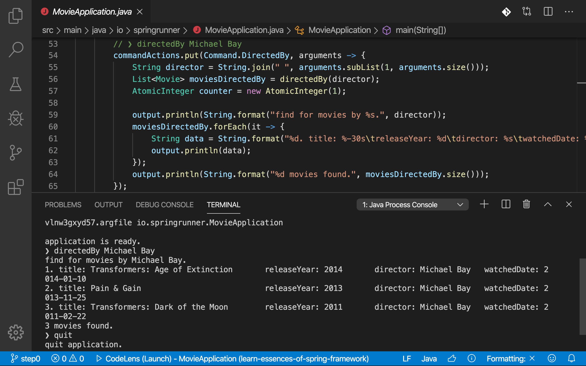

Learn Essence of Spring Workshop
스프링 프레임워크의 핵심 개발 원칙과 3대 기술(IoC/DI, AOP, PSA)을 학습하는 핸즈온 랩 워크숍입니다.
본 워크숍은 스프링 프레임워크의 기본 기술이자 핵심 개발 원칙인 제어의 역전(IoC)과 의존관계 주입(DI)을 이해하고, 더 나아가 스프링 3대 핵심 기술인 스프링 IoC 컨테이너와 빈, 관점지향 프로그래밍, 이식 가능한 서비스 추상화를 학습하는 워크숍입니다. 참가자는 스프링 핵심 기술과 함께 소프트웨어 설계 원칙, 디자인 패턴을 배울 수 있고, 이를 응용해 변경에 유연하게 대응할 수 있는 애플리케이션 개발을 경험할 수 있습니다.
목표
- 제어의 역전(IoC)과 의존관계 주입(DI)을 학습합니다.
- 스프링 IoC 컨테이너와 빈(Spring IoC Container and Beans)을 학습합니다.
- 스프링 IoC 컨테이너 생성과 소멸하는 방법을 다룹니다.
- 빈(Beans) 등록 및 관리 방법을 다룹니다.
- 관점지향 프로그래밍(Aspect Oriented Programming, AOP)을 학습합니다.
- 관점지향 프로그래밍의 원리를 학습합니다.
- 자바 코드로 직접 AOP를 다루는 방법을 학습합니다.
- 스프링이 제공하는 AOP 모듈을 다루는 방법을 학습합니다.
- 이식 가능한 서비스 추상화(Portable Service Abstraction)를 학습합니다.
- 서비스 추상화의 배경과 개념을 학습합니다.
- 스프링이 제공하는 PSA를 다루는 방법을 학습합니다.
- 소프트웨어 복잡성 이해하고, 복잡성을 다루는 몇 가지 설계 원칙과 디자인 패턴을 학습합니다.
학습자료 및 환경
워크숍 과정에서 사용하는 JVM 플랫폼 및 프레임워크, 라이브러리와 도구는 아래와 같습니다.
- Java SE 11 및 Java EE 8을 사용합니다.
- Spring Framework 5.x를 사용합니다.
- 빌드 도구로 그레이들(Gradle)을 사용합니다.
- IDE는 Spring Tool Suite를 사용합니다.
진행방식

순수 자바로 작성된 콘솔 애플리케이션에 스프링 프레임워크를 도입하고, 리팩토링을 통해 점진적으로 코드를 개선합니다. 가이드 러너가 라이브 코딩과 함께 리팩터링 목적과 스프링 기술을 설명해주면, 참가자는 해당 코드를 직접 작성하고 실행-테스트하는 과정을 반복하는 방식으로 진행됩니다.
참가대상 및 준비물
- 본 워크숍은 자바(Java) 언어의 특징과 문법을 이해하고 사용할 줄 아는 분을 대상으로 합니다.
- 참가자는 Java SE 11과 Spring Tool Suite가 설치된 개인 노트북을 지참해야 합니다.
참가신청
- 본 워크숍은 유료로 사전 신청 및 결제 후 참여할 수 있습니다.
- 신청 및 결제는 페스타(Festa)를 통해 할 수 있습니다.
참가취소 및 환불 정책
- 마감전 취소/환불은 페스타에서 할 수 있습니다.
- 참가 취소/환불 규정은 페스타 약관에 따라 처리됩니다.
- 참가비의 100%가 환불됩니다.
- 마감후 취소/환불은 메일(springrunner.kr@gmail.com)로 신청해야합니다.
- 메일 내용에 은행 / 환불계좌 / 계좌주 / 연락처 / 페스타 아이디를 작성해 보내야합니다.
- 참가비의 50%가 환불됩니다. (교육장 계약 비용으로 인한 점 양해바랍니다)
워크숍 일정
이 워크숍은 2020년 5월 중 개설될 예정입니다.
(코로나 19의 영향으로 3월 워크숍 개설이 취소되었습니다.)